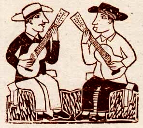
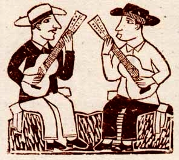
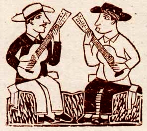
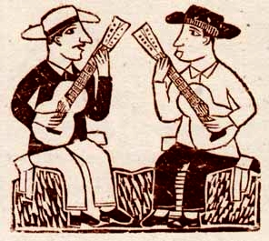

Palavras com a letra A

Palavras com a letra A

Palavras com a letra A

Palavras com a letra A

APERREAR - Encher o saco.
APETRECHADA - Dotada de beleza física.
APOIS - Expressão de concordância.
APOQUENTAR - Aborrecer, azucrinar, chatear.
APRAGATA - Alpercata.
APRUMADO - Arrumado, bem vestido, bonito, de bons modos.
APURRINHADO - Com raiva, puto.
ARENGA - Briga.
ARIADO - Desnorteado.
ARRUDIAR - Dar a volta.
Para conhecer mais dialetos únicos do Nordeste, clique aqui!